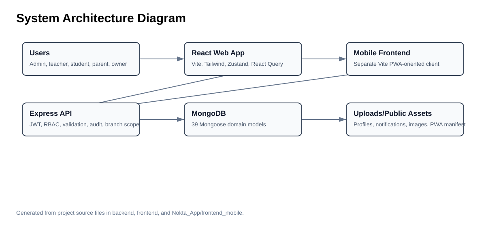
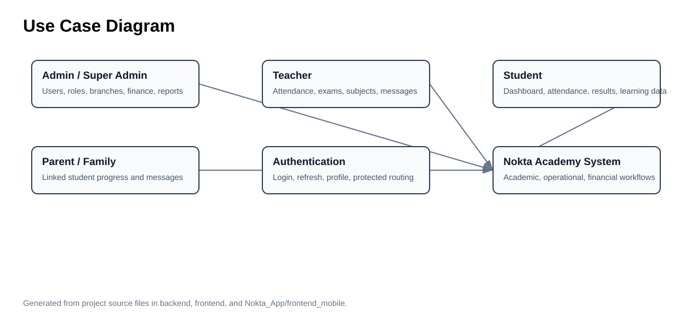
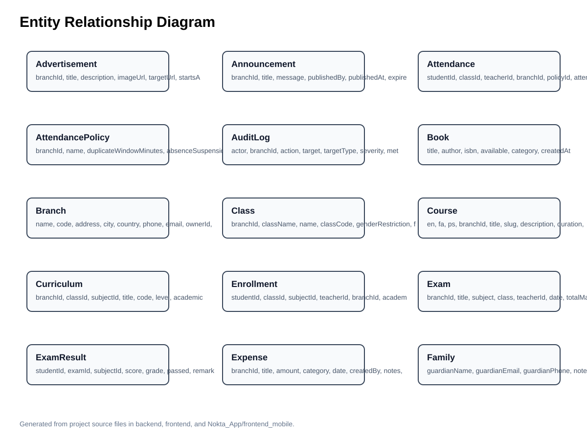
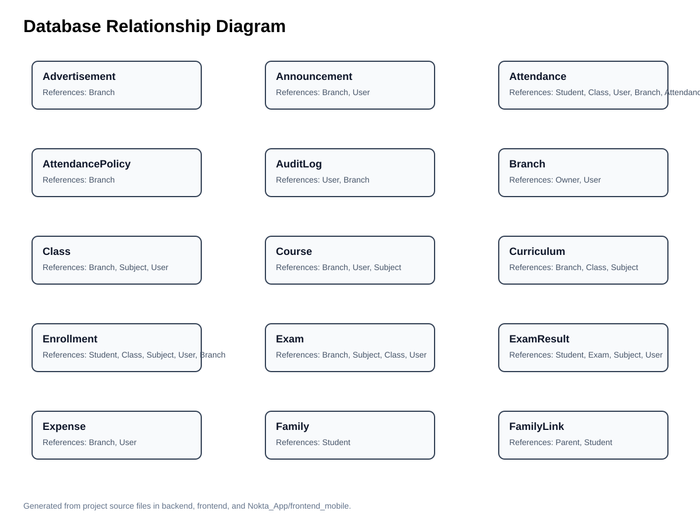
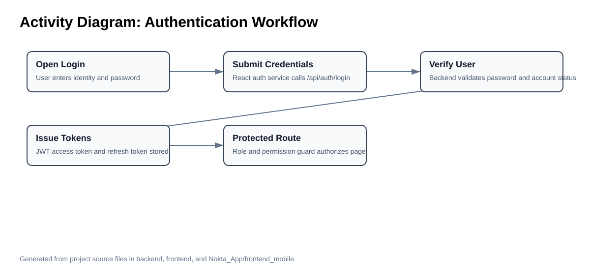
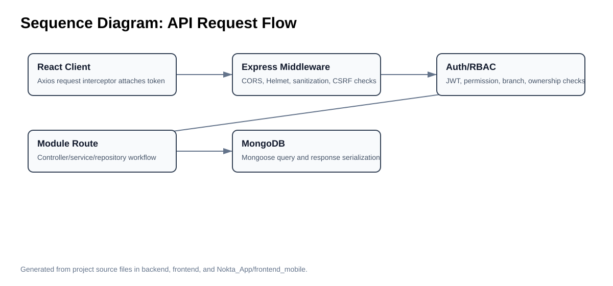
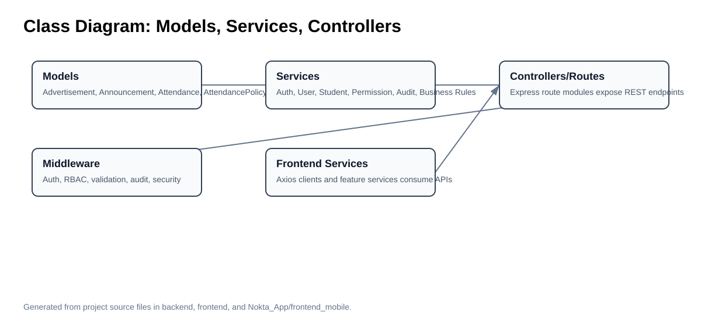
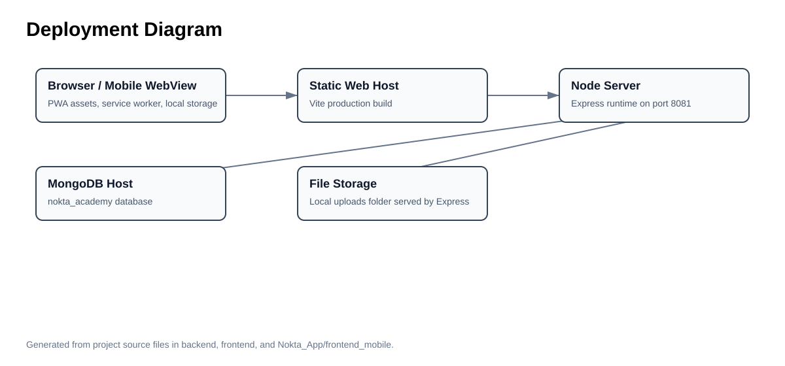
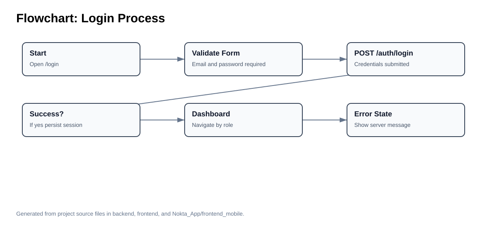
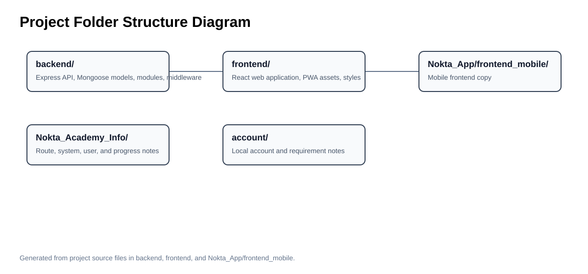

Educational institutions increasingly depend on integrated information systems to coordinate academic administration, communication, finance, reporting, and learner records. The Nokta Academy Management System is a full-stack software artifact built for this institutional context. The repository shows a Node.js and Express backend, a MongoDB database layer using Mongoose, a React and Vite web application, and a separate mobile-oriented frontend. The system is designed around the practical needs of academies: authenticated access, role-based dashboards, student and teacher management, attendance, examinations, results, payments, finance, books, notifications, reporting, and multilingual presentation.
Manual or fragmented academy administration creates duplicated records, delayed reporting, weak access control, and limited visibility for parents, students, teachers, and managers. A single academy may need to track student registration, class placement, attendance, examination results, payments, expenses, notifications, and staff responsibilities. Without an integrated platform, these workflows are prone to inconsistency and slow decision-making. Nokta Academy addresses this problem by centralizing academic and operational data in a secure API-backed application.
| Objective | Implementation evidence |
|---|---|
| Provide secure access control | JWT authentication, session tokens, role permissions, protected React routes |
| Manage academy entities | Mongoose models for students, teachers, classes, branches, courses, curriculum, attendance, results, finance, reports, and notifications |
| Support multilingual users | English, Dari/Persian, and Pashto locale files with i18next |
| Enable web and mobile access | React web frontend and separate mobile frontend application |
| Improve reliability | Validation scripts, audit middleware, repair scripts, offline cache, service worker configuration |
The scope includes backend API design, MongoDB data modeling, role-based security, frontend routing and state management, mobile frontend architecture, PWA/offline support, UI/UX organization, and deployment considerations. It does not include production infrastructure secrets or live institutional data. The importance of the project lies in its ability to transform academy management into a structured, auditable, and role-aware digital workflow.
| Research question | Project answer |
|---|---|
| How can an academy manage academic and administrative workflows in one system? | Through modular API domains and feature-oriented frontend pages. |
| How can sensitive roles be separated? | Through JWT authentication, canonical roles, permission policies, branch scoping, and protected routes. |
| How can the system support local language contexts? | Through locale catalogs for English, Persian/Dari, and Pashto plus RTL/LTR styling. |
| How can the platform remain useful with poor connectivity? | Through PWA assets and offline GET response caching in the frontend API client. |
The literature supporting Nokta Academy comes from software architecture, information systems design science, web API design, usability engineering, security guidance, and database documentation. Design science frames the project as a purposeful artifact evaluated by utility and rigor (Hevner et al., 2004; Wieringa, 2014). Software architecture literature emphasizes modularity, quality attributes, and maintainable boundaries (Bass et al., 2021; Sommerville, 2016). Enterprise application patterns explain the value of separating domain models, services, repositories, and presentation layers (Fowler, 2003). REST and web service literature justifies resource-oriented APIs and client-server separation (Fielding, 2000; Pautasso et al., 2008).
| Existing approach/system | Advantages | Disadvantages | Nokta Academy comparison |
|---|---|---|---|
| Manual registers and spreadsheets | Low initial cost; familiar to staff | Weak security, duplication, no real-time dashboards | Centralized MongoDB records, API validation, dashboards |
| Single-purpose school apps | Fast to deploy for one workflow | Limited integration across finance, attendance, exams, roles | Broad academic and administrative module set |
| Generic ERP systems | Mature reporting and finance tools | Often expensive and not tailored to small academies | Domain-specific academy workflows with multilingual UI |
| Custom web-only portal | Easy browser access | May not consider mobile/offline use | Separate mobile frontend and PWA/offline behaviors |
| Technology | Role in this project | Academic/technical rationale |
|---|---|---|
| Express.js | Backend HTTP API | Lightweight routing and middleware composition for web services |
| MongoDB/Mongoose | Document database and schema modeling | Flexible domain records for academy entities |
| React | Frontend component system | Reusable UI composition and state-driven interaction |
| TypeScript | Static typing across application layers | Improves maintainability and reduces class of runtime defects |
| JWT and bcrypt | Authentication and password protection | Common stateless access-token pattern plus password hashing |
| Tailwind CSS | Utility styling | Rapid UI consistency through constrained design tokens |
| i18next | Localization | Supports multilingual and RTL/LTR interface requirements |
Compared with previous systems, Nokta Academy combines multiple concerns that are often separated: academic management, operational finance, role administration, reports, multilingual access, and offline tolerance. Its advantages include centralized data, modular backend routes, reusable frontend feature pages, role-aware dashboards, explicit security middleware, and clear deployable boundaries. Its disadvantages are the operational complexity of maintaining three application surfaces and the need for disciplined data governance when many roles can access the same institutional data.
Bass, L., Clements, P., & Kazman, R. (2021). Software architecture in practice (4th ed.). Addison-Wesley.
Boehm, B. W. (1988). A spiral model of software development and enhancement. Computer, 21(5), 61–72. https://doi.org/10.1109/2.59
Fielding, R. T. (2000). Architectural styles and the design of network-based software architectures (Doctoral dissertation, University of California, Irvine).
Fowler, M. (2003). Patterns of enterprise application architecture. Addison-Wesley.
Gamma, E., Helm, R., Johnson, R., & Vlissides, J. (1995). Design patterns: Elements of reusable object-oriented software. Addison-Wesley.
Garrett, J. J. (2011). The elements of user experience: User-centered design for the web and beyond (2nd ed.). New Riders.
Hevner, A. R., March, S. T., Park, J., & Ram, S. (2004). Design science in information systems research. MIS Quarterly, 28(1), 75–105. https://doi.org/10.2307/25148625
International Organization for Standardization. (2011). ISO/IEC 25010:2011 systems and software engineering: Systems and software quality requirements and evaluation (SQuaRE). ISO.
MongoDB, Inc. (2024). MongoDB manual. https://www.mongodb.com/docs/manual/
Nielsen, J. (1994). Usability engineering. Morgan Kaufmann.
Open Web Application Security Project. (2021). OWASP top 10: The ten most critical web application security risks. https://owasp.org/Top10/
Pautasso, C., Zimmermann, O., & Leymann, F. (2008). RESTful web services vs. big web services: Making the right architectural decision. Proceedings of the 17th International Conference on World Wide Web, 805–814. https://doi.org/10.1145/1367497.1367606
Pressman, R. S., & Maxim, B. R. (2020). Software engineering: A practitioner’s approach (9th ed.). McGraw-Hill.
Shneiderman, B., Plaisant, C., Cohen, M., Jacobs, S., Elmqvist, N., & Diakopoulos, N. (2016). Designing the user interface: Strategies for effective human-computer interaction (6th ed.). Pearson.
Sommerville, I. (2016). Software engineering (10th ed.). Pearson.
The methodology applied to Nokta Academy follows a design science orientation: the project is treated as an artifact created to solve an organizational information problem, evaluated against usefulness, correctness, usability, security, and maintainability. The repository evidence shows an iterative engineering process, with work logs, repair reports, audit notes, seed scripts, validation scripts, and modular code organization used to refine the artifact over time.
Requirement discovery is represented in the system by domain coverage rather than by a single requirements file. The implemented modules show that the academy requires student registration, teacher administration, class grouping, curriculum and course management, attendance recording, examinations, result publication, finance, expenses, reporting, notifications, language settings, and role administration. These features reveal a multi-stakeholder environment where daily academic operations and administrative control must be supported in one integrated system.
The backend architecture uses Express as the HTTP application boundary and Mongoose as the persistence abstraction. The app.ts file establishes security and operational middleware before routing: CORS with an explicit allowed-origin list, Helmet security headers, JSON and URL-encoded parsers with configured body limits, request sanitization, CSRF protection, compression, upload serving, JWT authentication, rate limiting, permission checks, branch scoping, ownership checks, audit logging, and centralized error handling.
The frontend architecture uses React, Vite, TypeScript, Tailwind CSS, Zustand, React Query, React Router, i18next, Recharts, and PWA assets. The route definition shows lazy-loaded pages for authentication, home, dashboards, user management, analytics, finance, reports, academic standards, roles, AI assistant, profile, and CRUD resource pages. This design reduces initial bundle pressure and allows the interface to be organized around role-based workflows.
The mobile application is a separate Vite frontend copy with the same principal dependency family as the web frontend. Its existence indicates an adaptive strategy: the project can maintain a mobile-specific presentation layer while sharing architectural conventions, service integration ideas, localization choices, and PWA-oriented deployment techniques.
The methodology applied to Nokta Academy follows a design science orientation: the project is treated as an artifact created to solve an organizational information problem, evaluated against usefulness, correctness, usability, security, and maintainability. The repository evidence shows an iterative engineering process, with work logs, repair reports, audit notes, seed scripts, validation scripts, and modular code organization used to refine the artifact over time.
Requirement discovery is represented in the system by domain coverage rather than by a single requirements file. The implemented modules show that the academy requires student registration, teacher administration, class grouping, curriculum and course management, attendance recording, examinations, result publication, finance, expenses, reporting, notifications, language settings, and role administration. These features reveal a multi-stakeholder environment where daily academic operations and administrative control must be supported in one integrated system.
The backend architecture uses Express as the HTTP application boundary and Mongoose as the persistence abstraction. The app.ts file establishes security and operational middleware before routing: CORS with an explicit allowed-origin list, Helmet security headers, JSON and URL-encoded parsers with configured body limits, request sanitization, CSRF protection, compression, upload serving, JWT authentication, rate limiting, permission checks, branch scoping, ownership checks, audit logging, and centralized error handling.
The frontend architecture uses React, Vite, TypeScript, Tailwind CSS, Zustand, React Query, React Router, i18next, Recharts, and PWA assets. The route definition shows lazy-loaded pages for authentication, home, dashboards, user management, analytics, finance, reports, academic standards, roles, AI assistant, profile, and CRUD resource pages. This design reduces initial bundle pressure and allows the interface to be organized around role-based workflows.
The mobile application is a separate Vite frontend copy with the same principal dependency family as the web frontend. Its existence indicates an adaptive strategy: the project can maintain a mobile-specific presentation layer while sharing architectural conventions, service integration ideas, localization choices, and PWA-oriented deployment techniques.
The methodology applied to Nokta Academy follows a design science orientation: the project is treated as an artifact created to solve an organizational information problem, evaluated against usefulness, correctness, usability, security, and maintainability. The repository evidence shows an iterative engineering process, with work logs, repair reports, audit notes, seed scripts, validation scripts, and modular code organization used to refine the artifact over time.
Requirement discovery is represented in the system by domain coverage rather than by a single requirements file. The implemented modules show that the academy requires student registration, teacher administration, class grouping, curriculum and course management, attendance recording, examinations, result publication, finance, expenses, reporting, notifications, language settings, and role administration. These features reveal a multi-stakeholder environment where daily academic operations and administrative control must be supported in one integrated system.
The backend architecture uses Express as the HTTP application boundary and Mongoose as the persistence abstraction. The app.ts file establishes security and operational middleware before routing: CORS with an explicit allowed-origin list, Helmet security headers, JSON and URL-encoded parsers with configured body limits, request sanitization, CSRF protection, compression, upload serving, JWT authentication, rate limiting, permission checks, branch scoping, ownership checks, audit logging, and centralized error handling.
The frontend architecture uses React, Vite, TypeScript, Tailwind CSS, Zustand, React Query, React Router, i18next, Recharts, and PWA assets. The route definition shows lazy-loaded pages for authentication, home, dashboards, user management, analytics, finance, reports, academic standards, roles, AI assistant, profile, and CRUD resource pages. This design reduces initial bundle pressure and allows the interface to be organized around role-based workflows.
The mobile application is a separate Vite frontend copy with the same principal dependency family as the web frontend. Its existence indicates an adaptive strategy: the project can maintain a mobile-specific presentation layer while sharing architectural conventions, service integration ideas, localization choices, and PWA-oriented deployment techniques.
The methodology applied to Nokta Academy follows a design science orientation: the project is treated as an artifact created to solve an organizational information problem, evaluated against usefulness, correctness, usability, security, and maintainability. The repository evidence shows an iterative engineering process, with work logs, repair reports, audit notes, seed scripts, validation scripts, and modular code organization used to refine the artifact over time.
Requirement discovery is represented in the system by domain coverage rather than by a single requirements file. The implemented modules show that the academy requires student registration, teacher administration, class grouping, curriculum and course management, attendance recording, examinations, result publication, finance, expenses, reporting, notifications, language settings, and role administration. These features reveal a multi-stakeholder environment where daily academic operations and administrative control must be supported in one integrated system.
The backend architecture uses Express as the HTTP application boundary and Mongoose as the persistence abstraction. The app.ts file establishes security and operational middleware before routing: CORS with an explicit allowed-origin list, Helmet security headers, JSON and URL-encoded parsers with configured body limits, request sanitization, CSRF protection, compression, upload serving, JWT authentication, rate limiting, permission checks, branch scoping, ownership checks, audit logging, and centralized error handling.
| Functional requirement | Implemented project area |
|---|---|
| Login, refresh, profile and protected sessions | backend/src/modules/auth and frontend auth service/store |
| Student management | students module, Student model, CrudPage/resource configuration |
| Teacher and class administration | teachers/classes modules, Teacher/Class models |
| Attendance recording and viewing | attendance backend module and AttendancePage |
| Exams and results | exams/results modules and Exam/Result/ExamResult models |
| Finance, payments, and expenses | finance, payments, expenses modules and frontend finance pages |
| Reports and auditability | reports module, audit middleware, AuditLog model |
| Notifications and student messages | notifications and student-messages modules |
| Language settings | language-settings module and locale files |
| Non-functional requirement | Implementation evidence |
|---|---|
| Security | Helmet, CORS allow-list, JWT, bcrypt, CSRF, request sanitization, RBAC, ownership and branch middleware |
| Performance | Compression, lazy-loaded React routes, pagination validator, indexed database schemas where defined |
| Usability | Dashboard layout, app shell, common UI controls, role-specific navigation |
| Reliability | Centralized error handler, health route, validation scripts, seed and repair scripts |
| Maintainability | Feature folders, service classes, Mongoose models, TypeScript, modular route files |
| Portability | Vite builds, environment config, default local MongoDB URI, PWA manifest |
The methodology applied to Nokta Academy follows a design science orientation: the project is treated as an artifact created to solve an organizational information problem, evaluated against usefulness, correctness, usability, security, and maintainability. The repository evidence shows an iterative engineering process, with work logs, repair reports, audit notes, seed scripts, validation scripts, and modular code organization used to refine the artifact over time.
Requirement discovery is represented in the system by domain coverage rather than by a single requirements file. The implemented modules show that the academy requires student registration, teacher administration, class grouping, curriculum and course management, attendance recording, examinations, result publication, finance, expenses, reporting, notifications, language settings, and role administration. These features reveal a multi-stakeholder environment where daily academic operations and administrative control must be supported in one integrated system.
The backend architecture uses Express as the HTTP application boundary and Mongoose as the persistence abstraction. The app.ts file establishes security and operational middleware before routing: CORS with an explicit allowed-origin list, Helmet security headers, JSON and URL-encoded parsers with configured body limits, request sanitization, CSRF protection, compression, upload serving, JWT authentication, rate limiting, permission checks, branch scoping, ownership checks, audit logging, and centralized error handling.
The frontend architecture uses React, Vite, TypeScript, Tailwind CSS, Zustand, React Query, React Router, i18next, Recharts, and PWA assets. The route definition shows lazy-loaded pages for authentication, home, dashboards, user management, analytics, finance, reports, academic standards, roles, AI assistant, profile, and CRUD resource pages. This design reduces initial bundle pressure and allows the interface to be organized around role-based workflows.
The mobile application is a separate Vite frontend copy with the same principal dependency family as the web frontend. Its existence indicates an adaptive strategy: the project can maintain a mobile-specific presentation layer while sharing architectural conventions, service integration ideas, localization choices, and PWA-oriented deployment techniques.
The methodology applied to Nokta Academy follows a design science orientation: the project is treated as an artifact created to solve an organizational information problem, evaluated against usefulness, correctness, usability, security, and maintainability. The repository evidence shows an iterative engineering process, with work logs, repair reports, audit notes, seed scripts, validation scripts, and modular code organization used to refine the artifact over time.
Requirement discovery is represented in the system by domain coverage rather than by a single requirements file. The implemented modules show that the academy requires student registration, teacher administration, class grouping, curriculum and course management, attendance recording, examinations, result publication, finance, expenses, reporting, notifications, language settings, and role administration. These features reveal a multi-stakeholder environment where daily academic operations and administrative control must be supported in one integrated system.
The backend architecture uses Express as the HTTP application boundary and Mongoose as the persistence abstraction. The app.ts file establishes security and operational middleware before routing: CORS with an explicit allowed-origin list, Helmet security headers, JSON and URL-encoded parsers with configured body limits, request sanitization, CSRF protection, compression, upload serving, JWT authentication, rate limiting, permission checks, branch scoping, ownership checks, audit logging, and centralized error handling.
The frontend architecture uses React, Vite, TypeScript, Tailwind CSS, Zustand, React Query, React Router, i18next, Recharts, and PWA assets. The route definition shows lazy-loaded pages for authentication, home, dashboards, user management, analytics, finance, reports, academic standards, roles, AI assistant, profile, and CRUD resource pages. This design reduces initial bundle pressure and allows the interface to be organized around role-based workflows.
The mobile application is a separate Vite frontend copy with the same principal dependency family as the web frontend. Its existence indicates an adaptive strategy: the project can maintain a mobile-specific presentation layer while sharing architectural conventions, service integration ideas, localization choices, and PWA-oriented deployment techniques.
The methodology applied to Nokta Academy follows a design science orientation: the project is treated as an artifact created to solve an organizational information problem, evaluated against usefulness, correctness, usability, security, and maintainability. The repository evidence shows an iterative engineering process, with work logs, repair reports, audit notes, seed scripts, validation scripts, and modular code organization used to refine the artifact over time.
Requirement discovery is represented in the system by domain coverage rather than by a single requirements file. The implemented modules show that the academy requires student registration, teacher administration, class grouping, curriculum and course management, attendance recording, examinations, result publication, finance, expenses, reporting, notifications, language settings, and role administration. These features reveal a multi-stakeholder environment where daily academic operations and administrative control must be supported in one integrated system.
The backend architecture uses Express as the HTTP application boundary and Mongoose as the persistence abstraction. The app.ts file establishes security and operational middleware before routing: CORS with an explicit allowed-origin list, Helmet security headers, JSON and URL-encoded parsers with configured body limits, request sanitization, CSRF protection, compression, upload serving, JWT authentication, rate limiting, permission checks, branch scoping, ownership checks, audit logging, and centralized error handling.
The frontend architecture uses React, Vite, TypeScript, Tailwind CSS, Zustand, React Query, React Router, i18next, Recharts, and PWA assets. The route definition shows lazy-loaded pages for authentication, home, dashboards, user management, analytics, finance, reports, academic standards, roles, AI assistant, profile, and CRUD resource pages. This design reduces initial bundle pressure and allows the interface to be organized around role-based workflows.
The mobile application is a separate Vite frontend copy with the same principal dependency family as the web frontend. Its existence indicates an adaptive strategy: the project can maintain a mobile-specific presentation layer while sharing architectural conventions, service integration ideas, localization choices, and PWA-oriented deployment techniques.
The methodology applied to Nokta Academy follows a design science orientation: the project is treated as an artifact created to solve an organizational information problem, evaluated against usefulness, correctness, usability, security, and maintainability. The repository evidence shows an iterative engineering process, with work logs, repair reports, audit notes, seed scripts, validation scripts, and modular code organization used to refine the artifact over time.
Requirement discovery is represented in the system by domain coverage rather than by a single requirements file. The implemented modules show that the academy requires student registration, teacher administration, class grouping, curriculum and course management, attendance recording, examinations, result publication, finance, expenses, reporting, notifications, language settings, and role administration. These features reveal a multi-stakeholder environment where daily academic operations and administrative control must be supported in one integrated system.
The backend architecture uses Express as the HTTP application boundary and Mongoose as the persistence abstraction. The app.ts file establishes security and operational middleware before routing: CORS with an explicit allowed-origin list, Helmet security headers, JSON and URL-encoded parsers with configured body limits, request sanitization, CSRF protection, compression, upload serving, JWT authentication, rate limiting, permission checks, branch scoping, ownership checks, audit logging, and centralized error handling.
The frontend architecture uses React, Vite, TypeScript, Tailwind CSS, Zustand, React Query, React Router, i18next, Recharts, and PWA assets. The route definition shows lazy-loaded pages for authentication, home, dashboards, user management, analytics, finance, reports, academic standards, roles, AI assistant, profile, and CRUD resource pages. This design reduces initial bundle pressure and allows the interface to be organized around role-based workflows.
The mobile application is a separate Vite frontend copy with the same principal dependency family as the web frontend. Its existence indicates an adaptive strategy: the project can maintain a mobile-specific presentation layer while sharing architectural conventions, service integration ideas, localization choices, and PWA-oriented deployment techniques.
The methodology applied to Nokta Academy follows a design science orientation: the project is treated as an artifact created to solve an organizational information problem, evaluated against usefulness, correctness, usability, security, and maintainability. The repository evidence shows an iterative engineering process, with work logs, repair reports, audit notes, seed scripts, validation scripts, and modular code organization used to refine the artifact over time.
Requirement discovery is represented in the system by domain coverage rather than by a single requirements file. The implemented modules show that the academy requires student registration, teacher administration, class grouping, curriculum and course management, attendance recording, examinations, result publication, finance, expenses, reporting, notifications, language settings, and role administration. These features reveal a multi-stakeholder environment where daily academic operations and administrative control must be supported in one integrated system.
The backend architecture uses Express as the HTTP application boundary and Mongoose as the persistence abstraction. The app.ts file establishes security and operational middleware before routing: CORS with an explicit allowed-origin list, Helmet security headers, JSON and URL-encoded parsers with configured body limits, request sanitization, CSRF protection, compression, upload serving, JWT authentication, rate limiting, permission checks, branch scoping, ownership checks, audit logging, and centralized error handling.
The frontend architecture uses React, Vite, TypeScript, Tailwind CSS, Zustand, React Query, React Router, i18next, Recharts, and PWA assets. The route definition shows lazy-loaded pages for authentication, home, dashboards, user management, analytics, finance, reports, academic standards, roles, AI assistant, profile, and CRUD resource pages. This design reduces initial bundle pressure and allows the interface to be organized around role-based workflows.
The mobile application is a separate Vite frontend copy with the same principal dependency family as the web frontend. Its existence indicates an adaptive strategy: the project can maintain a mobile-specific presentation layer while sharing architectural conventions, service integration ideas, localization choices, and PWA-oriented deployment techniques.
The methodology applied to Nokta Academy follows a design science orientation: the project is treated as an artifact created to solve an organizational information problem, evaluated against usefulness, correctness, usability, security, and maintainability. The repository evidence shows an iterative engineering process, with work logs, repair reports, audit notes, seed scripts, validation scripts, and modular code organization used to refine the artifact over time.
Requirement discovery is represented in the system by domain coverage rather than by a single requirements file. The implemented modules show that the academy requires student registration, teacher administration, class grouping, curriculum and course management, attendance recording, examinations, result publication, finance, expenses, reporting, notifications, language settings, and role administration. These features reveal a multi-stakeholder environment where daily academic operations and administrative control must be supported in one integrated system.
The backend architecture uses Express as the HTTP application boundary and Mongoose as the persistence abstraction. The app.ts file establishes security and operational middleware before routing: CORS with an explicit allowed-origin list, Helmet security headers, JSON and URL-encoded parsers with configured body limits, request sanitization, CSRF protection, compression, upload serving, JWT authentication, rate limiting, permission checks, branch scoping, ownership checks, audit logging, and centralized error handling.










| Module | Source file | Detected endpoint patterns |
|---|---|---|
| admin | backend/backend\src\modules\admin\admin.routes.ts | POST /reset-all; POST /rebuild-system |
| ai-assistant | backend/backend\src\modules\ai-assistant\ai-assistant.routes.ts | GET /insights; POST /generate |
| attendance | backend/backend\src\modules\attendance\attendance.routes.ts | GET /options; GET /summary; GET /; POST /; GET /policies; POST /policies; PUT /policies/:id |
| audit | backend/backend\src\modules\audit\audit.routes.ts | GET / |
| auth | backend/backend\src\modules\auth\auth.routes.ts | POST /login; GET /register/options; POST /register/student; POST /refresh; POST /logout; POST /logout-all; POST /forgot-password; POST /reset-password |
| books | backend/backend\src\modules\books\books.routes.ts | POST /; GET / |
| branches | backend/backend\src\modules\branches\branches.routes.ts | GET /manager-options; GET /; POST /; PATCH /:id; PUT /:id; POST /:id/request-delete; POST /:id/approve-delete; DELETE /:id |
| classes | backend/backend\src\modules\classes\classes.routes.ts | POST /; GET /; GET /:id; PUT /:id; PATCH /:id; DELETE /:id |
| courses | backend/backend\src\modules\courses\courses.routes.ts | GET /public/home; GET /public; GET /; POST /; GET /:id; PUT /:id; DELETE /:id |
| curriculum | backend/backend\src\modules\curriculum\curriculum.routes.ts | GET /; POST /; GET /:id; PUT /:id; DELETE /:id |
| dashboard | backend/backend\src\modules\dashboard\dashboard.routes.ts | GET /summary; GET /master-summary |
| exams | backend/backend\src\modules\exams\exams.routes.ts | POST /; PUT /:id; GET /; GET /:id |
| expenses | backend/backend\src\modules\expenses\expenses.routes.ts | POST /; GET /summary; GET / |
| families | backend/backend\src\modules\families\families.routes.ts | POST /; GET /; GET /:id |
| finance | backend/backend\src\modules\finance\finance.routes.ts | GET /summary; POST /income; GET / |
| language-settings | backend/backend\src\modules\language-settings\language-settings.routes.ts | GET /; GET /current; PUT /current |
| notifications | backend/backend\src\modules\notifications\notifications.routes.ts | GET /public; POST /; GET /unread-count; GET /; GET /:id; PUT /:id; PATCH /:id; DELETE /:id |
| payments | backend/backend\src\modules\payments\payments.routes.ts | GET /; POST /; GET /:id/invoice |
| permissions | backend/backend\src\modules\permissions\permissions.routes.ts | GET /template; GET / |
| reports | backend/backend\src\modules\reports\reports.routes.ts | GET /; GET /analytics; POST /generate |
| results | backend/backend\src\modules\results\results.routes.ts | POST /; GET /; POST /:id/ai-recommendation; GET /:id |
| roles | backend/backend\src\modules\roles\roles.routes.ts | GET /; POST /; PUT /:slug; DELETE /:slug |
| student-messages | backend/backend\src\modules\student-messages\student-messages.routes.ts | GET /my-teacher; GET /; POST / |
| students | backend/backend\src\modules\students\students.routes.ts | POST /; PUT /:id; GET /; DELETE /:id; GET /family; GET /teacher; GET /:id |
| subjects | backend/backend\src\modules\subjects\subjects.routes.ts | GET /; POST /; GET /:id; PUT /:id; PATCH /:id; DELETE /:id |
| teachers | backend/backend\src\modules\teachers\teachers.routes.ts | GET /; POST /; GET /:id; PUT /:id; DELETE /:id |
| timetable | backend/backend\src\modules\timetable\timetable.routes.ts | GET /; POST /; GET /:id; PUT /:id; DELETE /:id |
| users | backend/backend\src\modules\users\users.routes.ts | POST /; GET /; GET /count; GET /:id; PATCH /:id; PUT /:id; PUT /:id/permissions; DELETE /:id |
| Model | Source file | Major fields | Detected references |
|---|---|---|---|
| Advertisement | backend/backend\src\models\Advertisement.ts | branchId, title, description, imageUrl, targetUrl, startsAt, endsAt, active | Branch |
| Announcement | backend/backend\src\models\Announcement.ts | branchId, title, message, publishedBy, publishedAt, expiresAt | Branch, User |
| Attendance | backend/backend\src\models\Attendance.ts | studentId, classId, teacherId, branchId, policyId, attendanceDate, session, status, source, notes, markedBy | Student, Class, User, Branch, AttendancePolicy |
| AttendancePolicy | backend/backend\src\models\AttendancePolicy.ts | branchId, name, duplicateWindowMinutes, absenceSuspensionThreshold, onlineAutoMarkEnabled, salaryDeductionPerAbsence, reminderLeadDays, active | Branch |
| AuditLog | backend/backend\src\models\AuditLog.ts | actor, branchId, action, target, targetType, severity, metadata, ipAddress, userAgent | User, Branch |
| Book | backend/backend\src\models\Book.ts | title, author, isbn, available, category, createdAt | No explicit ref detected |
| Branch | backend/backend\src\models\Branch.ts | name, code, address, city, country, phone, email, ownerId, managerId, active, timezone, deleteRequestedAt, deleteRequestedBy, ownerDeleteApprovedAt, ownerDeleteApprovedBy, auditHistory | Owner, User |
| Class | backend/backend\src\models\Class.ts | branchId, className, name, classCode, genderRestriction, feeAmount, studentCount, capacity, active, ownerApprovalRequiredForDeletion, ownerDeleteApprovedAt | Branch, Subject, User |
| Course | backend/backend\src\models\Course.ts | en, fa, ps, branchId, title, slug, description, duration, fee, instructor, teacher, schedule, capacity, enrolledCount, enrollmentStatus, imageUrl, academicCategory, category | Branch, User, Subject |
| Curriculum | backend/backend\src\models\Curriculum.ts | branchId, classId, subjectId, title, code, level, academicYear, term, weeklyHours, durationWeeks, objectives, learningOutcomes, standards, scopeSequence, assessmentPlan, resources, status, active | Branch, Class, Subject |
| Enrollment | backend/backend\src\models\Enrollment.ts | studentId, classId, subjectId, teacherId, branchId, academicYear, status, enrolledAt, registrationExpiryDate | Student, Class, Subject, User, Branch |
| Exam | backend/backend\src\models\Exam.ts | branchId, title, subject, class, teacherId, date, totalMarks, passingMarks, examType, examCode, onlineExamUrl, googleFormUrl, status, publishedAt | Branch, Subject, Class, User |
| ExamResult | backend/backend\src\models\ExamResult.ts | studentId, examId, subjectId, score, grade, passed, remarks, publishedAt, publishedBy, immutableAfterPublish, auditHistory | Student, Exam, Subject, User |
| Expense | backend/backend\src\models\Expense.ts | branchId, title, amount, category, date, createdBy, notes, immutableRecord, auditHistory | Branch, User |
| Family | backend/backend\src\models\Family.ts | guardianName, guardianEmail, guardianPhone, notes, createdAt | Student |
| FamilyLink | backend/backend\src\models\FamilyLink.ts | parentId, studentId, relationType, isPrimary | Parent, Student |
| FinanceEntry | backend/backend\src\models\FinanceEntry.ts | branchId, title, amount, category, date, createdBy, source, notes, immutableRecord, auditHistory | Branch, User |
| LanguageSetting | backend/backend\src\models\LanguageSetting.ts | userId, key, language, scope | User |
| LearningResource | backend/backend\src\models\LearningResource.ts | title, subjectId, classId, branchId, uploadedBy, type, url, description, published | Subject, Class, Branch, User |
| Notification | backend/backend\src\models\Notification.ts | branchId, title, description, message, classId, subjectId, teacherId, category, publishDate, expiresAt, publishStatus, priority, pinned, metadata, severity | Branch, Class, Subject, User |
| Owner | backend/backend\src\models\Owner.ts | userId, title, policyAccess, analyticsAccess, dailyOperationsAccess | User, Branch |
| Parent | backend/backend\src\models\Parent.ts | userId, branchId, guardianName, guardianPhone, guardianEmail, relationType, readOnlyAccess | User, Branch, Student |
| Payment | backend/backend\src\models\Payment.ts | studentId, branchId, enrollmentId, collectedBy, amount, currency, paymentDate, method, referenceNumber, notes, immutableRecord, auditHistory | Student, Branch, Enrollment, User |
| Permission | backend/backend\src\models\Permission.ts | key, module, action, description, riskLevel | No explicit ref detected |
| QrContact | backend/backend\src\models\QrContact.ts | userId, branchId, label, qrValue, contactType, active | User, Branch |
| Question | backend/backend\src\models\Question.ts | examId, subjectId, text, type, correctAnswer, marks, difficulty | Exam, Subject |
| Report | backend/backend\src\models\Report.ts | branchId, generatedBy, type, title, periodKey, data, exportedAt, status | Branch, User |
| Result | backend/backend\src\models\Result.ts | student, exam, score, grade, remarks, gradedBy, publishedAt, immutableAfterPublish, auditHistory | User, Exam |
| Role | backend/backend\src\models\Role.ts | key, slug, name, description, scope, isSystemRole | No explicit ref detected |
| Salary | backend/backend\src\models\Salary.ts | employeeId, branchId, monthKey, baseAmount, deductions, netAmount, currency, approvedBy, immutableRecord, auditHistory | User, Branch |
| SalaryTransaction | backend/backend\src\models\SalaryTransaction.ts | teacherId, studentId, courseId, subjectId, classId, branchId, paymentId, feeAmount, percentage, earnedAmount, salaryType, source, month, year, status, paymentReference, createdBy, isDeleted | User, Student, Course, Subject, Class, Branch, Payment |
| SessionToken | backend/backend\src\models\SessionToken.ts | userId, sessionId, tokenHash, tokenType, deviceId, deviceName, userAgent, ipAddress, expiresAt, revokedAt, revokedBy, replacedBySessionId, lastUsedAt, reason, metadata | User |
| StationerySale | backend/backend\src\models\StationerySale.ts | branchId, soldBy, title, quantity, unitPrice, totalAmount, saleDate | Branch, User |
| Student | backend/backend\src\models\Student.ts | rollNo, studentId, branchId, firstName, lastName, fatherName, familyPhone, familyEmail, loginEmail, profileImage, gender, registrationDate, registrationExpiryDate, classId, subjectId, teacherId, feeAmount, paidAmount | Branch, Class, Subject, User, Family, Parent |
| StudentMessage | backend/backend\src\models\StudentMessage.ts | branchId, studentId, teacherId, subject, message, status, whatsappLink, readAt | Branch, User |
| Subject | backend/backend\src\models\Subject.ts | branchId, title, code, classId, feeAmount, teacher, examCount, activeStatus, description | Branch, Class, User |
| Teacher | backend/backend\src\models\Teacher.ts | userId, branchId, teacherCode, gender, salaryType, fixedSalary, percentageRate, active | User, Branch, Subject, Class |
| Timetable | backend/backend\src\models\Timetable.ts | branchId, classId, subjectId, teacherId, dayOfWeek, startTime, endTime, room, deliveryMode, onlineLink, notes, active | Branch, Class, Subject, User |
| User | backend/backend\src\models\User.ts | hash, changedAt, name, username, email, phone, profileImage, password, role, status, permissions, default, branchId, familyId, parentProfileId, ownerProfileId, teacherId, studentId | Branch, Family, Parent, Owner, Subject, Class, User |
| Area | Detected implementation |
|---|---|
| React feature folders | ai, attendance, auth, dashboard, finance, reports, resources, roles, standards, users |
| React routes | /login, /register, /home, /forbidden, /, /dashboard, /dashboard/super-admin, /dashboard/super-admin/master, /dashboard/manage-users, /dashboard/admin, /dashboard/teacher, /dashboard/student, /dashboard/parent, /dashboard/family, /dashboard/owner, /dashboard/branch-manager, /users, /analytics, /campaign, /ecommerce, /settings, /attendance, /finance, /expenses, /reports, /academic-standards, /roles, /ai-assistant, /profile, * |
| Backend API mounts | /auth, /users, /branches, /students, /student-messages, /teachers, /classes, /timetable, /courses, /curriculum, /ai-assistant, /subjects, /attendance, /exams, /results, /payments, /finance, /expenses, /families, /books, /audit, /notifications, /roles, /permissions, /dashboard, /reports, /language-settings, /admin |
| Mobile source files | Nokta_App\frontend_mobile\src\vite-env.d.ts |
| Package dependencies | [["Backend","bcryptjs, compression, cors, dotenv, express, express-rate-limit, helmet, joi, jsonwebtoken, mongoose, morgan, multer"],["Web frontend","@tanstack/react-query, axios, framer-motion, i18next, lucide-react, react, react-dom, react-i18next, react-router-dom, recharts, zustand"],["Mobile frontend","@tanstack/react-query, axios, framer-motion, i18next, lucide-react, react, react-dom, react-i18next, react-router-dom, recharts, zustand"]] |
📁 .agent
📄 .gitignore
📄 agent.log
📄 memory.json
📁 .runtime-validation
📄 dashboard-admin.png
📄 dashboard-student.png
📄 dashboard-super_admin.png
📄 dashboard-super-admin-en.png
📄 dashboard-teacher.png
📄 students-en-restored.png
📄 students-en.png
📄 students-fa.png
📄 students-ps.png
📁 account
📄 accounts.md
📄 Language
📄 Last_Command
📄 New_Command
📄 Please perform a full project architectu.md
📄 Project_info_Update_note
📄 اکونت ها.txt
📁 backend
📁 src
📁 config
📄 env.ts
📄 systemMasterRules.ts
📁 constants
📄 allowedOrigins.ts
📁 controllers
📄 system.controller.ts
📁 database
📁 repositories
📄 classRepository.ts
📄 subjectRepository.ts
📄 teacherRepository.ts
📄 userRepository.ts
📄 connect.ts
📁 helpers
📄 response.ts
📁 jobs
📄 index.ts
📁 middlewares
📄 audit.ts
📄 auth.ts
📄 branch.ts
📄 errorHandler.ts
📄 ownership.ts
📄 permission.ts
📄 rateLimiter.ts
📄 rbac.ts
📄 security.ts
📄 validate.ts
📁 models
📄 Advertisement.ts
📄 Announcement.ts
📄 Attendance.ts
📄 AttendancePolicy.ts
📄 AuditLog.ts
📄 Book.ts
📄 Branch.ts
📄 Class.ts
📄 Course.ts
📄 Curriculum.ts
📄 Enrollment.ts
📄 Exam.ts
📄 ExamResult.ts
📄 Expense.ts
📄 Family.ts
📄 FamilyLink.ts
📄 FinanceEntry.ts
📄 index.ts
📄 LanguageSetting.ts
📄 LearningResource.ts
📄 Notification.ts
📄 Owner.ts
📄 Parent.ts
📄 Payment.ts
📄 Permission.ts
📄 QrContact.ts
📄 Question.ts
📄 Report.ts
📄 Result.ts
📄 Role.ts
📄 Salary.ts
📄 SalaryTransaction.ts
📄 SessionToken.ts
📄 StationerySale.ts
📄 Student.ts
📄 StudentMessage.ts
📄 Subject.ts
📄 Teacher.ts
📄 Timetable.ts
📄 User.ts
📁 modules
📁 admin
📄 admin.routes.ts
📁 ai-assistant
📄 ai-assistant.routes.ts
📁 attendance
📄 attendance.routes.ts
📁 audit
📄 audit.routes.ts
📁 auth
📄 auth.routes.ts
📁 books
📄 books.routes.ts
📁 branches
📄 branches.routes.ts
📁 classes
📄 classes.routes.ts
📁 courses
📄 courses.controller.ts
📄 courses.routes.ts
📄 courses.service.ts
📄 courses.validation.ts
📁 curriculum
📄 curriculum.routes.ts
📁 dashboard
📄 dashboard.routes.ts
📁 exams
📄 exams.routes.ts
📁 expenses
📄 expenses.routes.ts
📁 families
📄 families.routes.ts
📁 finance
📄 finance.routes.ts
📁 language-settings
📄 language-settings.routes.ts
📁 notifications
📄 notifications.routes.ts
📁 payments
📄 payments.routes.ts
📁 permissions
📄 permissions.routes.ts
📁 reports
📄 reports.routes.ts
📁 results
📄 results.routes.ts
📁 roles
📄 roles.routes.ts
📁 student-messages
📄 student-messages.routes.ts
📁 students
📄 students.routes.ts
📁 subjects
📄 subjects.routes.ts
📁 teachers
📄 teachers.routes.ts
📁 timetable
📄 timetable.routes.ts
📁 users
📄 users.routes.ts
📁 routes
📄 index.ts
📄 system.routes.ts
📁 scripts
📄 clear_database.ts
📄 create_super_admin.ts
📄 delete_students_teachers.ts
📄 repair_data_integrity.ts
📄 repairClassCodeNulls.ts
📄 seed.ts
📄 validate_api_integrity.ts
📁 services
📄 auditService.ts
📄 authService.ts
📄 businessRuleService.ts
📄 classService.ts
📄 dataIntegrityService.ts
📄 permissionService.ts
📄 roleProfileService.ts
📄 sessionService.ts
📄 studentService.ts
📄 userService.ts
📁 types
📄 custom.d.ts
📄 index.d.ts
📁 utils
📄 password.ts
📄 requestSanitizer.ts
📄 roleHelpers.ts
📄 roles.ts
📄 schema.ts
📁 validators
📄 pagination.ts
📄 app.ts
📄 server.ts
📁 uploads
📁 notifications
📄 1776367661263-images__2_.jfif
📄 1776399798279-ChatGPT_Image______________________________________________.png
📄 1776405758952-images__2_.jfif
📁 profile
📄 1776019937032-048-coins.png
📄 1776020102221-048-coins.png
📄 1776020120622-004-bed.png
📄 1776020866595-In_The_name.png
📄 1776020867790-In_The_name.png
📄 1776020868191-In_The_name.png
📄 1776022194056-1.png
📄 1776022254315-In_The_name.png
📄 1776023771473-1.png
📄 1776023823380-1.png
📄 1776024927767-1.png
📄 1776095466777-33.png
📄 1776367298100-download__1_.jfif
📄 1776367325581-download__1_.jfif
📄 default.png
📄 student-0001.png
📄 student-0002.png
📄 student-0003.png
📄 student-0004.png
📄 student-0005.png
📄 student-0006.png
📄 student-0007.png
📄 student-0008.png
📄 student-0009.png
📄 student-0010.png
📄 student-0011.png
📄 student-0012.png
📄 student-0013.png
📄 student-0014.png
📄 student-0015.png
📄 student-0016.png
📄 student-0017.png
📄 student-0018.png
📄 student-0019.png
📄 student-0020.png
📄 student-0021.png
📄 student-0022.png
📄 student-0023.png
📄 student-0024.png
📄 student-0025.png
📄 student-0026.png
📄 student-0027.png
📄 student-0028.png
📄 student-0029.png
📄 student-0030.png
📄 student-0031.png
📄 student-0032.png
📄 student-0033.png
📄 student-0034.png
📄 student-0035.png
📄 student-0036.png
📄 student-0037.png
📄 student-0038.png
📄 student-0039.png
📄 student-0040.png
📄 student-0041.png
📄 student-0042.png
📄 student-0043.png
📄 student-0044.png
📄 student-0045.png
📄 student-0046.png
📄 student-0047.png
📄 student-0048.png
📄 student-0049.png
📄 student-0050.png
📄 student-0051.png
📄 student-0052.png
📄 student-0053.png
📄 student-0054.png
📄 student-0055.png
📄 student-0056.png
📄 student-0057.png
📄 student-0058.png
📄 student-0059.png
📄 student-0060.png
📄 student-0061.png
📄 student-0062.png
📄 student-0063.png
📄 student-0064.png
📄 student-0065.png
📄 student-0066.png
📄 student-0067.png
📄 student-0068.png
📄 student-0069.png
📄 student-0070.png
📄 student-0071.png
📄 student-0072.png
📄 student-0073.png
📄 student-0074.png
📄 student-0075.png
📄 student-0076.png
📄 student-0077.png
📄 student-0078.png
📄 student-0079.png
📄 student-0080.png
📄 student-0081.png
📄 student-0082.png
📄 student-0083.png
📄 student-0084.png
📄 student-0085.png
📄 student-0086.png
📄 student-0087.png
📄 student-0088.png
📄 student-0089.png
📄 student-0090.png
📄 student-0091.png
📄 student-0092.png
📄 student-0093.png
📄 student-0094.png
📄 student-0095.png
📄 student-0096.png
📄 student-0097.png
📄 student-0098.png
📄 student-0099.png
📄 student-0100.png
📄 student-0101.png
📄 student-0102.png
📄 student-0103.png
📄 student-0104.png
📄 student-0105.png
📄 student-0106.png
📄 student-0107.png
📄 student-0108.png
📄 student-0109.png
📄 student-0110.png
📄 student-0111.png
📄 student-0112.png
📄 student-0113.png
📄 student-0114.png
📄 student-0115.png
📄 student-0116.png
📄 student-0117.png
📄 student-0118.png
📄 student-0119.png
📄 student-0120.png
📄 student-0121.png
📄 student-0122.png
📄 student-0123.png
📄 student-0124.png
📄 student-0125.png
📄 student-0126.png
📄 student-0127.png
📄 student-0128.png
📄 student-0129.png
📄 student-0130.png
📄 student-0131.png
📄 student-0132.png
📄 student-0133.png
📄 student-0134.png
📄 student-0135.png
📄 student-0136.png
📄 student-0137.png
📄 student-0138.png
📄 student-0139.png
📄 student-0140.png
📄 student-0141.png
📄 student-0142.png
📄 student-0143.png
📄 student-0144.png
📄 student-0145.png
📄 student-0146.png
📄 student-0147.png
📄 student-0148.png
📄 student-0149.png
📄 student-0150.png
📄 student-0151.png
📄 student-0152.png
📄 student-0153.png
📄 student-0154.png
📄 student-0155.png
📄 student-0156.png
📄 student-0157.png
📄 student-0158.png
📄 student-0159.png
📄 student-0160.png
📄 student-0161.png
📄 student-0162.png
📄 student-0163.png
📄 student-0164.png
📄 student-0165.png
📄 student-0166.png
📄 student-0167.png
📄 student-0168.png
📄 student-0169.png
📄 student-0170.png
📄 student-0171.png
📄 student-0172.png
📄 student-0173.png
📄 student-0174.png
📄 student-0175.png
📄 student-0176.png
📄 student-0177.png
📄 student-0178.png
📄 student-0179.png
📄 student-0180.png
📄 student-0181.png
📄 student-0182.png
📄 student-0183.png
📄 student-0184.png
📄 student-0185.png
📄 student-0186.png
📄 student-0187.png
📄 student-0188.png
📄 student-0189.png
📄 student-0190.png
📄 student-0191.png
📄 student-0192.png
📄 student-0193.png
📄 student-0194.png
📄 student-0195.png
📄 student-0196.png
📄 student-0197.png
📄 student-0198.png
📄 student-0199.png
📄 student-0200.png
📄 student-0201.png
📄 student-0202.png
📄 student-0203.png
📄 student-0204.png
📄 student-0205.png
📄 student-0206.png
📄 student-0207.png
📄 student-0208.png
📄 student-0209.png
📄 student-0210.png
📄 student-0211.png
📄 student-0212.png
📄 student-0213.png
📄 student-0214.png
📄 student-0215.png
📄 student-0216.png
📄 student-0217.png
📄 student-0218.png
📄 student-0219.png
📄 student-0220.png
📄 student-0221.png
📄 student-0222.png
📄 student-0223.png
📄 student-0224.png
📄 student-0225.png
📄 student-0226.png
📄 student-0227.png
📄 student-0228.png
📄 student-0229.png
📄 student-0230.png
📄 student-0231.png
📄 student-0232.png
📄 student-0233.png
📄 student-0234.png
📄 student-0235.png
📄 student-0236.png
📄 student-0237.png
📄 student-0238.png
📄 student-0239.png
📄 student-0240.png
📄 student-0241.png
📄 student-0242.png
📄 student-0243.png
📄 student-0244.png
📄 student-0245.png
📄 student-0246.png
📄 student-0247.png
📄 student-0248.png
📄 student-0249.png
📄 student-0250.png
📄 student-0251.png
📄 student-0252.png
📄 student-0253.png
📄 student-0254.png
📄 student-0255.png
📄 student-0256.png
📄 student-0257.png
📄 student-0258.png
📄 student-0259.png
📄 student-0260.png
📄 student-0261.png
📄 student-0262.png
📄 student-0263.png
📄 student-0264.png
📄 student-0265.png
📄 student-0266.png
📄 student-0267.png
📄 student-0268.png
📄 student-0269.png
📄 student-0270.png
📄 student-0271.png
📄 student-0272.png
📄 student-0273.png
📄 student-0274.png
📄 student-0275.png
📄 student-0276.png
📄 student-0277.png
📄 student-0278.png
📄 student-0279.png
📄 student-0280.png
📄 student-0281.png
📄 student-0282.png
📄 student-0283.png
📄 student-0284.png
📄 student-0285.png
📄 student-0286.png
📄 student-0287.png
📄 student-0288.png
📄 student-0289.png
📄 student-0290.png
📄 student-0291.png
📄 student-0292.png
📄 student-0293.png
📄 student-0294.png
📄 student-0295.png
📄 student-0296.png
📄 student-0297.png
📄 student-0298.png
📄 student-0299.png
📄 student-0300.png
📄 teacher-001.png
📄 teacher-002.png
📄 teacher-003.png
📄 teacher-004.png
📄 teacher-005.png
📄 teacher-006.png
📄 teacher-007.png
📄 teacher-008.png
📄 teacher-009.png
📄 teacher-010.png
📄 teacher-011.png
📄 teacher-012.png
📄 teacher-013.png
📄 teacher-014.png
📄 teacher-015.png
📄 teacher-016.png
📄 teacher-017.png
📄 teacher-018.png
📄 teacher-019.png
📄 teacher-020.png
📄 teacher-021.png
📄 teacher-022.png
📄 teacher-023.png
📄 teacher-024.png
📄 teacher-025.png
📄 teacher-026.png
📄 teacher-027.png
📄 teacher-028.png
📄 teacher-029.png
📄 teacher-030.png
📄 .env.example
📄 backend-429.stderr.log
📄 backend-429.stdout.log
📄 backend-auth-check.stderr.log
📄 backend-auth-check.stdout.log
📄 backend-dev.stderr.log
📄 backend-dev.stdout.log
📄 backend-health.stderr.log
📄 backend-health.stdout.log
📄 backend-smoke.stderr.log
📄 backend-smoke.stdout.log
📄 backend-temp.stderr.log
📄 backend-temp.stdout.log
📄 backend-ui.stderr.log
📄 backend-ui.stdout.log
📄 create_super_admin.js
📄 fix_imports.py
📄 package-lock.json
📄 package.json
📄 seed_academy_data.js
📄 seed_students.js
📄 test_family.js
📄 tsconfig.json
📁 frontend
📁 .runtime-validation
📄 dashboard-accountant.png
📄 dashboard-admin.png
📄 dashboard-family_student.png
📄 dashboard-librarian.png
📄 dashboard-student.png
📄 dashboard-super_admin.png
📄 dashboard-super-admin-en.png
📄 dashboard-teacher.png
📄 report.json
📄 students-en-restored.png
📄 students-en.png
📄 students-fa.png
📄 students-ps.png
📁 public
📁 images
📁 admin
📄 download (1).jfif
📄 download (6).jfif
📄 download.jfif
📁 home
📄 academic-classroom.jpg
📄 lecture-hall.jpg
📄 README.md
📄 university-library.jpg
📁 manager
📄 download (1).jfif
📄 download (2).jfif
📄 download (3).jfif
📄 download (4).jfif
📄 download (5).jfif
📄 download.jfif
📄 images (1).jfif
📄 images (2).jfif
📄 images (3).jfif
📄 images.jfif
📁 stunet
📄 b1.jpg
📄 b3.jpg
📄 b4.jpg
📄 download (1).jfif
📄 download (2).jfif
📄 download (3).jfif
📄 download (4).jfif
📄 download (5).jfif
📄 download (6).jfif
📄 download.jfif
📄 images (1).jfif
📄 images (2).jfif
📄 images (3).jfif
📄 images (4).jfif
📄 images (5).jfif
📄 images (6).jfif
📄 images (7).jfif
📄 images (8).jfif
📄 images (9).jfif
📄 images.jfif
📁 techer
📄 download (1).jfif
📄 download (2).jfif
📄 download (7).jfif
📄 download.jfif
📄 images (1).jfif
📄 images (2).jfif
📄 images (3).jfif
📄 images (4).jfif
📄 images.jfif
📄 1.png
📄 favicon.svg
📄 manifest.webmanifest
📄 sw.js
📁 scripts
📄 uiRuntimeValidate.mjs
📄 updateProjectProgress.js
📁 src
📁 app
📁 providers
📄 AppProviders.tsx
📄 ThemeProvider.tsx
📄 App.tsx
📄 main.tsx
📁 components
📁 ui
📄 Button.tsx
📄 Card.tsx
📄 Input.tsx
📄 LanguageSwitcher.tsx
📄 Select.tsx
📄 Skeleton.tsx
📄 ThemeToggle.tsx
📄 OfflineStatus.tsx
📁 config
📄 projectProgress.ts
📁 constants
📄 chartTheme.ts
📄 designSystem.ts
📁 features
📁 ai
📁 pages
📁 attendance
📁 pages
📁 services
📁 auth
📁 constants
📁 pages
📁 services
📁 utils
📁 dashboard
📁 components
📁 pages
📁 services
📁 finance
📁 pages
📁 services
📁 reports
📁 pages
📁 services
📁 resources
📁 config
📁 pages
📁 roles
📁 pages
📁 services
📁 standards
📁 pages
📁 users
📁 services
📁 hooks
📄 useDebounce.ts
📄 useSelectOptions.ts
📁 layouts
📄 AppShell.tsx
📄 DashboardLayout.tsx
📁 locales
📁 messages
📁 en
📁 fa
📁 ps
📄 index.ts
📄 i18n.ts
📁 middleware
📄 ProtectedRoute.tsx
📁 pages
📄 ForbiddenPage.tsx
📄 HomePage.tsx
📄 NotFoundPage.tsx
📄 ProfilePage.tsx
📁 routes
📄 AppRoutes.tsx
📁 services
📄 apiClient.ts
📄 offlineData.ts
📁 shared
📁 components
📄 Common.tsx
📁 store
📄 authStore.ts
📁 styles
📁 components
📄 index.css
📁 global
📄 index.css
📁 layouts
📄 index.css
📁 ltr
📄 index.css
📁 rtl
📄 index.css
📁 themes
📄 default.css
📄 index.css
📁 types
📄 recharts.d.ts
📁 utils
📄 listSearchSort.ts
📄 vite-env.d.ts
📄 frontend-429.stderr.log
📄 frontend-429.stdout.log
📄 frontend-dev.stderr.log
📄 frontend-dev.stdout.log
📄 frontend-preview.stderr.log
📄 frontend-preview.stdout.log
📄 frontend-runtime.stderr.log
📄 frontend-runtime.stdout.log
📄 frontend-ui.stderr.log
📄 frontend-ui.stdout.log
📄 index.html
📄 package-lock.json
📄 package.json
📄 postcss.config.js
📄 tailwind.config.js
📄 tsconfig.json
📄 tsconfig.node.json
📄 vite.config.ts
📁 Nokta_Academy_Info
📄 Project_Progress.md
📄 Route_Map.md
📄 System_info.md
📄 User_info.md
📁 Nokta_App
📁 frontend_mobile
📁 public
📄 manifest.webmanifest
📄 sw.js
📁 src
📁 app
📄 vite-env.d.ts
📄 index.html
📄 package-lock.json
📄 package.json
📄 postcss.config.js
📄 tailwind.config.js
📄 tsconfig.json
📄 tsconfig.node.json
📄 vite.config.js
📄 vite.config.ts
📁 project_info
📄 Project_info.js
📄 .gitignore
📄 All_project_info
📄 Auth_Enhancement_Report.md
📄 Critical_System_Bug_Fix_Report.md
📄 Final_Enterprise_System_Audit.md
📄 Final_info.md
📄 Final_Repair_Report.md
📄 Nokta_Academy_Management_System_info.md
📄 package-lock.json
📄 PROJECT_INFORMATION.md
📄 Project_syntax_created
📄 README.md
📄 README.md~
📄 system_master_rules.js
📄 SYSTEM_WORK_LOG.md
The resulting system is a full-stack academy management platform with three major delivery surfaces: the Express/MongoDB backend, the React web application, and the mobile frontend. The backend exposes the API modules mounted in routes/index.ts, while the frontend consumes these APIs through axios services and protected React routes. The system therefore satisfies the core result expected from an information system artifact: it turns scattered academic administration activities into structured digital workflows.
Authentication results are visible in both backend and frontend implementation. On the backend, JWT verification is followed by session blacklist checking, user lookup, account status checking, canonical role resolution, and permission override retrieval. On the frontend, the API client attaches bearer tokens, refreshes expired access tokens, clears invalid sessions, and redirects unauthorized users to the login page. This closed loop is a strong implementation result because access control is not isolated to one layer.
Database results are represented by the Mongoose model set. The schema layer covers users, students, teachers, classes, branches, courses, curriculum, attendance, exams, results, payments, finance entries, expenses, books, reports, roles, permissions, audit logs, notifications, sessions, family links, timetable items, and student messages. The breadth of these models demonstrates that the project database is not a demonstration-only structure; it is a domain model for real academy operations.
User experience results can be inferred from the UI structure. The application includes a home page, login and registration pages, dashboards for several roles, CRUD modules, a dashboard layout, an app shell layout, common UI controls, localization for English, Dari/Persian, and Pashto, theme support, offline status, and service-worker configuration. These features support accessibility across user groups and environments where connectivity may vary.
Testing and validation results are partly documented through scripts and logs. The backend package includes lint/build, seed, repair-data-integrity, validate-api, and specialized maintenance commands. The repository also contains backend and frontend runtime logs, health logs, smoke logs, UI logs, and audit/repair reports. These artifacts show that the project has been exercised through development and validation cycles.
The resulting system is a full-stack academy management platform with three major delivery surfaces: the Express/MongoDB backend, the React web application, and the mobile frontend. The backend exposes the API modules mounted in routes/index.ts, while the frontend consumes these APIs through axios services and protected React routes. The system therefore satisfies the core result expected from an information system artifact: it turns scattered academic administration activities into structured digital workflows.
Authentication results are visible in both backend and frontend implementation. On the backend, JWT verification is followed by session blacklist checking, user lookup, account status checking, canonical role resolution, and permission override retrieval. On the frontend, the API client attaches bearer tokens, refreshes expired access tokens, clears invalid sessions, and redirects unauthorized users to the login page. This closed loop is a strong implementation result because access control is not isolated to one layer.
Database results are represented by the Mongoose model set. The schema layer covers users, students, teachers, classes, branches, courses, curriculum, attendance, exams, results, payments, finance entries, expenses, books, reports, roles, permissions, audit logs, notifications, sessions, family links, timetable items, and student messages. The breadth of these models demonstrates that the project database is not a demonstration-only structure; it is a domain model for real academy operations.
User experience results can be inferred from the UI structure. The application includes a home page, login and registration pages, dashboards for several roles, CRUD modules, a dashboard layout, an app shell layout, common UI controls, localization for English, Dari/Persian, and Pashto, theme support, offline status, and service-worker configuration. These features support accessibility across user groups and environments where connectivity may vary.
Testing and validation results are partly documented through scripts and logs. The backend package includes lint/build, seed, repair-data-integrity, validate-api, and specialized maintenance commands. The repository also contains backend and frontend runtime logs, health logs, smoke logs, UI logs, and audit/repair reports. These artifacts show that the project has been exercised through development and validation cycles.
The resulting system is a full-stack academy management platform with three major delivery surfaces: the Express/MongoDB backend, the React web application, and the mobile frontend. The backend exposes the API modules mounted in routes/index.ts, while the frontend consumes these APIs through axios services and protected React routes. The system therefore satisfies the core result expected from an information system artifact: it turns scattered academic administration activities into structured digital workflows.
Authentication results are visible in both backend and frontend implementation. On the backend, JWT verification is followed by session blacklist checking, user lookup, account status checking, canonical role resolution, and permission override retrieval. On the frontend, the API client attaches bearer tokens, refreshes expired access tokens, clears invalid sessions, and redirects unauthorized users to the login page. This closed loop is a strong implementation result because access control is not isolated to one layer.
Database results are represented by the Mongoose model set. The schema layer covers users, students, teachers, classes, branches, courses, curriculum, attendance, exams, results, payments, finance entries, expenses, books, reports, roles, permissions, audit logs, notifications, sessions, family links, timetable items, and student messages. The breadth of these models demonstrates that the project database is not a demonstration-only structure; it is a domain model for real academy operations.
User experience results can be inferred from the UI structure. The application includes a home page, login and registration pages, dashboards for several roles, CRUD modules, a dashboard layout, an app shell layout, common UI controls, localization for English, Dari/Persian, and Pashto, theme support, offline status, and service-worker configuration. These features support accessibility across user groups and environments where connectivity may vary.
Testing and validation results are partly documented through scripts and logs. The backend package includes lint/build, seed, repair-data-integrity, validate-api, and specialized maintenance commands. The repository also contains backend and frontend runtime logs, health logs, smoke logs, UI logs, and audit/repair reports. These artifacts show that the project has been exercised through development and validation cycles.
The resulting system is a full-stack academy management platform with three major delivery surfaces: the Express/MongoDB backend, the React web application, and the mobile frontend. The backend exposes the API modules mounted in routes/index.ts, while the frontend consumes these APIs through axios services and protected React routes. The system therefore satisfies the core result expected from an information system artifact: it turns scattered academic administration activities into structured digital workflows.
Authentication results are visible in both backend and frontend implementation. On the backend, JWT verification is followed by session blacklist checking, user lookup, account status checking, canonical role resolution, and permission override retrieval. On the frontend, the API client attaches bearer tokens, refreshes expired access tokens, clears invalid sessions, and redirects unauthorized users to the login page. This closed loop is a strong implementation result because access control is not isolated to one layer.
Database results are represented by the Mongoose model set. The schema layer covers users, students, teachers, classes, branches, courses, curriculum, attendance, exams, results, payments, finance entries, expenses, books, reports, roles, permissions, audit logs, notifications, sessions, family links, timetable items, and student messages. The breadth of these models demonstrates that the project database is not a demonstration-only structure; it is a domain model for real academy operations.
User experience results can be inferred from the UI structure. The application includes a home page, login and registration pages, dashboards for several roles, CRUD modules, a dashboard layout, an app shell layout, common UI controls, localization for English, Dari/Persian, and Pashto, theme support, offline status, and service-worker configuration. These features support accessibility across user groups and environments where connectivity may vary.
Testing and validation results are partly documented through scripts and logs. The backend package includes lint/build, seed, repair-data-integrity, validate-api, and specialized maintenance commands. The repository also contains backend and frontend runtime logs, health logs, smoke logs, UI logs, and audit/repair reports. These artifacts show that the project has been exercised through development and validation cycles.
The resulting system is a full-stack academy management platform with three major delivery surfaces: the Express/MongoDB backend, the React web application, and the mobile frontend. The backend exposes the API modules mounted in routes/index.ts, while the frontend consumes these APIs through axios services and protected React routes. The system therefore satisfies the core result expected from an information system artifact: it turns scattered academic administration activities into structured digital workflows.
Authentication results are visible in both backend and frontend implementation. On the backend, JWT verification is followed by session blacklist checking, user lookup, account status checking, canonical role resolution, and permission override retrieval. On the frontend, the API client attaches bearer tokens, refreshes expired access tokens, clears invalid sessions, and redirects unauthorized users to the login page. This closed loop is a strong implementation result because access control is not isolated to one layer.
Database results are represented by the Mongoose model set. The schema layer covers users, students, teachers, classes, branches, courses, curriculum, attendance, exams, results, payments, finance entries, expenses, books, reports, roles, permissions, audit logs, notifications, sessions, family links, timetable items, and student messages. The breadth of these models demonstrates that the project database is not a demonstration-only structure; it is a domain model for real academy operations.
User experience results can be inferred from the UI structure. The application includes a home page, login and registration pages, dashboards for several roles, CRUD modules, a dashboard layout, an app shell layout, common UI controls, localization for English, Dari/Persian, and Pashto, theme support, offline status, and service-worker configuration. These features support accessibility across user groups and environments where connectivity may vary.
Testing and validation results are partly documented through scripts and logs. The backend package includes lint/build, seed, repair-data-integrity, validate-api, and specialized maintenance commands. The repository also contains backend and frontend runtime logs, health logs, smoke logs, UI logs, and audit/repair reports. These artifacts show that the project has been exercised through development and validation cycles.
The resulting system is a full-stack academy management platform with three major delivery surfaces: the Express/MongoDB backend, the React web application, and the mobile frontend. The backend exposes the API modules mounted in routes/index.ts, while the frontend consumes these APIs through axios services and protected React routes. The system therefore satisfies the core result expected from an information system artifact: it turns scattered academic administration activities into structured digital workflows.
Authentication results are visible in both backend and frontend implementation. On the backend, JWT verification is followed by session blacklist checking, user lookup, account status checking, canonical role resolution, and permission override retrieval. On the frontend, the API client attaches bearer tokens, refreshes expired access tokens, clears invalid sessions, and redirects unauthorized users to the login page. This closed loop is a strong implementation result because access control is not isolated to one layer.
Database results are represented by the Mongoose model set. The schema layer covers users, students, teachers, classes, branches, courses, curriculum, attendance, exams, results, payments, finance entries, expenses, books, reports, roles, permissions, audit logs, notifications, sessions, family links, timetable items, and student messages. The breadth of these models demonstrates that the project database is not a demonstration-only structure; it is a domain model for real academy operations.
User experience results can be inferred from the UI structure. The application includes a home page, login and registration pages, dashboards for several roles, CRUD modules, a dashboard layout, an app shell layout, common UI controls, localization for English, Dari/Persian, and Pashto, theme support, offline status, and service-worker configuration. These features support accessibility across user groups and environments where connectivity may vary.
Testing and validation results are partly documented through scripts and logs. The backend package includes lint/build, seed, repair-data-integrity, validate-api, and specialized maintenance commands. The repository also contains backend and frontend runtime logs, health logs, smoke logs, UI logs, and audit/repair reports. These artifacts show that the project has been exercised through development and validation cycles.
The resulting system is a full-stack academy management platform with three major delivery surfaces: the Express/MongoDB backend, the React web application, and the mobile frontend. The backend exposes the API modules mounted in routes/index.ts, while the frontend consumes these APIs through axios services and protected React routes. The system therefore satisfies the core result expected from an information system artifact: it turns scattered academic administration activities into structured digital workflows.
Authentication results are visible in both backend and frontend implementation. On the backend, JWT verification is followed by session blacklist checking, user lookup, account status checking, canonical role resolution, and permission override retrieval. On the frontend, the API client attaches bearer tokens, refreshes expired access tokens, clears invalid sessions, and redirects unauthorized users to the login page. This closed loop is a strong implementation result because access control is not isolated to one layer.
Automated screenshot capture is attempted after document generation when a local frontend server is available. When runtime capture is not possible because a server or database is unavailable, the monograph package still includes source-derived diagrams and repository evidence. The diagrams in this chapter are inserted from Monograph_Project/diagrams and are suitable for academic submission as architectural evidence.
| Test/evaluation area | Observed result from repository |
|---|---|
| Backend compile/lint path | backend package exposes npm run lint and npm run build |
| API integrity | validate_api_integrity.ts exists for route validation |
| Data integrity | repair_data_integrity.ts and repairClassCodeNulls.ts exist |
| Seed data | seed.ts, seed_academy_data.js, create_super_admin scripts exist |
| Frontend runtime | Vite logs and runtime validation script are present |
| Security | Middleware chain applies authentication, permissions, branch scope, ownership, auditing, rate limiting, sanitization, CSRF, CORS, and Helmet |
| Result dimension | Evaluation |
|---|---|
| API implementation | 28 route modules detected under backend/src/modules, mounted through /api |
| Database implementation | 39 Mongoose models detected under backend/src/models |
| Web application | React route map includes protected dashboards, resources, finance, reports, attendance, roles, AI assistant, profile, login, registration, and home |
| Mobile application | Separate mobile frontend package uses the same core React/Vite dependency family |
| Security result | JWT verification is combined with session blacklist, account status checks, role profile permissions, route policy checks, ownership and audit middleware |
| UX result | Common UI components, localization, theme provider, app shell and dashboard layout create a coherent interface system |
The findings show that Nokta Academy is not merely a collection of screens; it is a layered information system with domain modeling, API enforcement, frontend workflow design, and operational scripts. The most important technical strength is the consistent separation of responsibilities. The backend centralizes security and route control, while the frontend organizes experience through features, protected routes, services, state management, localization, and reusable layout components.
The main challenge is breadth. A system that includes students, teachers, attendance, finance, exams, reports, books, roles, permissions, notifications, families, branches, and mobile access requires strong governance of naming, permissions, schemas, and user experience. The repository mitigates this through TypeScript, modular route files, service classes, validation utilities, repair scripts, and audit reports, but future work should continue strengthening automated tests and live deployment documentation.
Limitations include the absence of live production infrastructure evidence in the repository, dependence on MongoDB availability for backend runtime, and the difficulty of verifying every role workflow without live seeded data and institutional users. Future improvements should include end-to-end test suites, OpenAPI documentation, database migration/versioning strategy, automated screenshot tests, CI/CD pipelines, accessibility audits, analytics for workflow completion, and stronger backup and disaster recovery documentation.
Overall, Nokta Academy satisfies the expected goals of a university-level software project: it identifies a real institutional problem, implements a technically coherent solution, demonstrates modern full-stack design, and creates a foundation that can be evaluated, deployed, and extended.
Bass, L., Clements, P., & Kazman, R. (2021). Software architecture in practice (4th ed.). Addison-Wesley.
Boehm, B. W. (1988). A spiral model of software development and enhancement. Computer, 21(5), 61–72. https://doi.org/10.1109/2.59
Fielding, R. T. (2000). Architectural styles and the design of network-based software architectures (Doctoral dissertation, University of California, Irvine).
Fowler, M. (2003). Patterns of enterprise application architecture. Addison-Wesley.
Gamma, E., Helm, R., Johnson, R., & Vlissides, J. (1995). Design patterns: Elements of reusable object-oriented software. Addison-Wesley.
Garrett, J. J. (2011). The elements of user experience: User-centered design for the web and beyond (2nd ed.). New Riders.
Hevner, A. R., March, S. T., Park, J., & Ram, S. (2004). Design science in information systems research. MIS Quarterly, 28(1), 75–105. https://doi.org/10.2307/25148625
International Organization for Standardization. (2011). ISO/IEC 25010:2011 systems and software engineering: Systems and software quality requirements and evaluation (SQuaRE). ISO.
MongoDB, Inc. (2024). MongoDB manual. https://www.mongodb.com/docs/manual/
Nielsen, J. (1994). Usability engineering. Morgan Kaufmann.
Open Web Application Security Project. (2021). OWASP top 10: The ten most critical web application security risks. https://owasp.org/Top10/
Pautasso, C., Zimmermann, O., & Leymann, F. (2008). RESTful web services vs. big web services: Making the right architectural decision. Proceedings of the 17th International Conference on World Wide Web, 805–814. https://doi.org/10.1145/1367497.1367606
Pressman, R. S., & Maxim, B. R. (2020). Software engineering: A practitioner’s approach (9th ed.). McGraw-Hill.
Shneiderman, B., Plaisant, C., Cohen, M., Jacobs, S., Elmqvist, N., & Diakopoulos, N. (2016). Designing the user interface: Strategies for effective human-computer interaction (6th ed.). Pearson.
Sommerville, I. (2016). Software engineering (10th ed.). Pearson.
Tilkov, S., & Vinoski, S. (2010). Node.js: Using JavaScript to build high-performance network programs. IEEE Internet Computing, 14(6), 80–83. https://doi.org/10.1109/MIC.2010.145
Wieringa, R. J. (2014). Design science methodology for information systems and software engineering. Springer. https://doi.org/10.1007/978-3-662-43839-8